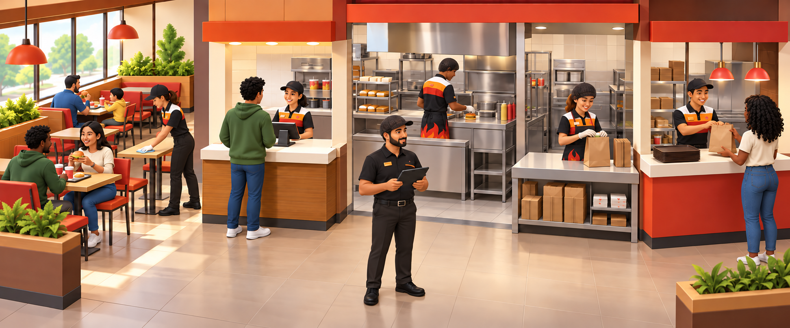
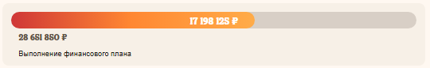

Сотрудник в зале
Создаёт комфорт, поддерживает чистоту и общается с Гостями.
Гостевой опытТрафик
Увидел отклонение
Проверил → сделал
Нажми на сотрудника на картинке — появится его карточка. Наведи курсор на карточку — подсветится сотрудник.

Создаёт комфорт, поддерживает чистоту и общается с Гостями.
Принимает заказ, помогает с выбором и предлагает дополнительные позиции.
Готовит блюда по стандарту и правильно использует продукты.
Быстро и правильно собирает заказ.
Проверяет заказ и вовремя передаёт его Гостю.
Количество людей, их нагрузка и расстановка влияют на работу всех зон.
Смотрит показатели, находит проблемную зону и говорит сотруднику, что нужно проверить или исправить сейчас.
Откуда появляется выручка и где видеть цель
Выручка — доход ресторана: все оплаты заказов, которые внесли Гости.
Выручку ресторан получает через каналы продаж. Это способы, с помощью которых Гость делает у нас заказ и оплачивает его.
Поэтому контролируй весь путь продукта: от приёма поставки до вручения готового заказа Гостю.
Открой Brave&Bold и сравни фактическую выручку с целью.

К 18:00 ресторан отстаёт от цели по выручке. До конца дня ещё четыре часа. Какое решение управляющего будет наиболее обоснованным?
Brave&Bold показывает результат. PLS помогает подготовиться к потоку заказов.
PLS прогнозирует продажи и подсказывает количество заготовок. Следи за фактом: если поток изменился, проверь подсказку системы и скорректируй работу.
Дальше по треку тебя ждёт отдельный курс «Система PLS». В нём ты подробнее разберёшь, как работать с прогнозом продаж, автокорректировкой и ручными изменениями.
Дальше разберём две причины изменения выручки: трафик и средний чек.
Больше заказов или выше сумма заказа
Выручка складывается из трафика и среднего чека.
Ты влияешь на оба показателя. Их тоже смотри в Brave&Bold.
Открывай карточки и используй их как подсказку на смене.
Что показывает: сколько денег принесли все оплаченные заказы. Наличные, карты, баллы «Спасибо» и короны уже учтены.
Что показывает: сколько Гостей сделали заказ. Смотри в Brave&Bold.
Что показывает: сколько в среднем стоит один заказ. Смотри в Brave&Bold.

Трафик не изменился, но выручка снизилась. Что нужно сделать управляющему в такой ситуации?
Гость вернётся, если заказ был быстрым, вкусным и правильным, а в ресторане было чисто и приятно.
Промоутер на месте и знает задачу?
Заказы выдаём не дольше цели?
Блюда приготовлены и собраны правильно?
Команда приветлива с Гостями?
В ресторане чисто, комфортно и безопасно?
Найди слабое место, исправь его и проверь результат. Хороший опыт помогает Гостям возвращаться.
Гостевой опыт важен не только для возвращения Гостей и трафика. Выполнение цели по этому показателю учитывается и в премии управляющего сменой.
Отдельная программа Eyeflow показывает, как у ресторана обстоят дела с Гостевым опытом и что стоит улучшить. Ключевые данные смотри в Brave&Bold. Даже если негативных отзывов нет, продолжай контролировать качество блюд, сборку заказов и чистоту.
Работу с отчётами по Гостевому опыту ты изучал раньше в курсе «Гостемания, работа с отчетами для АУП и выше». Вернись к нему, если хочешь вспомнить материал. Если ты ещё не проходил этот курс, пройди его.
Скорость — часть Гостевого опыта, но у неё есть отдельный показатель. SOS считается с момента, когда Гость получил чек, до выдачи последней позиции заказа. Отслеживай его в Brave&Bold.
Если SOS выше цели:

В обед SOS ухудшился, хотя людей на смене достаточно. Очередь накапливается только у выдачи, а кухня работает в обычном темпе. Какой план действий лучше?
FC, LC и расходы, которыми можно управлять
Затраты — это средства, которые потратили на продукцию и ее производство, аренду, коммунальные услуги, зарплату сотрудникам и т.д.
Шифту не нужно собирать P&L. Нужно выполнять действия, которые не дают затратам расти:
Дальше — готовые проверки по каждой группе.
Что показывает: сколько ресторан тратит на продукты, упаковку и другие производственные расходы.
Продукты и упаковка, которые использовали для заказа.
Списания, питание сотрудников, недостачи и излишки.
Перетащи элементы в подходящую группу.
Что показывает: сколько ресторан тратит на оплату труда команды.
На LC также влияют комплектность и текучесть.
Что показывает: хватает ли ресторану сотрудников для плановой выручки.
Если ниже цели: правильно расставь команду, усили загруженную станцию и сообщи директору о нехватке людей.
Что показывает: сколько сотрудников увольняется.
Что делать: равномерно распределять нагрузку, давать понятную обратную связь, обучать и поддерживать команду.
Затраты на коммунальные услуги и ремонт относятся к разным статьям “Отчета о прибылях и убытках”, но ты влияешь на них одинаково. Ты снижаешь все эти расходы, когда следишь, что сотрудники:
Контролируя Food Cost, Labor Cost и другие расходы, ты влияешь на прибыль ресторана. Дальше разберём, как она формируется.
Что остаётся после затрат ресторана
Сумма, которая остаётся после вычета всех расходов из доходов.
Запоминать расчёты не нужно. Запомни, какие действия смены влияют на каждый результат.
Просто: из выручки вычли продукты и упаковку — FC.
Твоё действие: выполняй цель по выручке, контролируй порции, упаковку и списания.
Просто: из маржи вычли оплату часов команды — LC.
Твоё действие: сопоставляй количество сотрудников с потоком заказов и проверяй отметки в Биосмарт.
Просто: из результата вычли остальные расходы ресторана.
Твоё действие: экономно используй ресурсы и следи за оборудованием.
На схеме показано, какие затраты последовательно вычитаются из выручки и какой вид прибыли остаётся на каждом этапе.
Нажимай на вычеты по порядку и смотри, какой вид прибыли получается на каждом этапе.
Как управляющий сменой, ты не отслеживаешь маржу, операционную прибыль и EBITDA напрямую, но решения каждой смены влияют на их итоговые значения в P&L — отчёте о прибылях и убытках.
ITPH показывает нагрузку команды
ITPH показывает нагрузку команды: сколько позиций она продаёт за один отработанный час.
Где смотреть: в Brave&Bold.
Самостоятельно считать не нужно: сравни план и факт в Brave&Bold.
Фактический ITPH выше плана, на сборке растёт очередь. Что сделать первым?
В Brave&Bold можно сравнить запланированный и фактический ITPH по часам работы ресторана.

Во время пика на сборке заказов растёт очередь. Там работает новый сотрудник, а опытный сотрудник на менее загруженной станции завершил основные задачи. Как использовать SEEF?
На самые загруженные станции ставь опытных и быстрых сотрудников.
Добавляй помощь на станции, где нагрузка выше.
Переводи сотрудников между станциями с учётом текущей загрузки.
Отпускай сотрудников на запланированные перерывы.
Обучай на рабочем месте, чтобы гибко менять роли сотрудников по расстановке SEEF.
Если нужно освежить правила расстановки, открой материалы в КингДом.
Готовые действия для смены
Сначала выполни действие из нужной строки. Затем снова проверь показатель.
Проверь трафик и средний чек. Работай с тем, который снизился.
Проверь SOS, качество, гостеприимство, чистоту и безопасность.
Проверь наполненность чека и дай команде конкретный фокус продаж.
Открой Eyeflow, найди слабый фактор и исправь его на смене.
Найди очередь, проверь заготовки и расстановку, усили станцию.
Проверь порции, упаковку, списания, недостачи и учёт продукции.
Сравни поток заказов и часы команды, проверь отметки в Биосмарт.
Перераспредели команду, усили загруженные зоны и сообщи директору.
Проверь нагрузку, общение, обратную связь и обучение команды.
Команда перегружена: усили загруженные станции по SEEF.
Проверь, соответствует ли количество сотрудников потоку заказов.
Проверь обе стороны: выручку и затраты — FC, LC и другие расходы.
Три вида прибыли сохранены в курсе: маржинальная прибыль зависит от выручки и FC; операционная — ещё и от LC; EBITDA — ещё и от остальных расходов.
Управляй двумя сторонами результата: помогай ресторану больше зарабатывать и контролируй затраты смены.
Хороший Гостевой опыт помогает возвращать Гостей, а наполненность и стоимость блюд влияют на средний чек.
Следи за продуктами и списаниями, соотносись с загрузкой команды и экономно используй ресурсы.
Для каждой ситуации выбери подходящий вывод или первое действие управляющего сменой.
Выручка, средний чек, виды прибыли и ITPH — на одном листе.
Пройди финальный тест и нажми кнопку, чтобы сохранить результат в системе обучения.